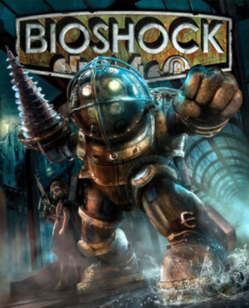

Immersive Sim · 2007
BioShock
Objectivism underwater, and a twist that interrogated the act of playing.

Cover: Wikipedia: BioShock
Facts
- Released
- 2007-08-21
- Genre
- Immersive Sim
- Category
- Immersive Sim
- Platforms
- Mobile, Nintendo, PC, PlayStation, Xbox
- Developers
- Irrational Games
- Publishers
- 2K
PC requirements
- Minimum
- [object Object]
- Recommended
- [object Object]